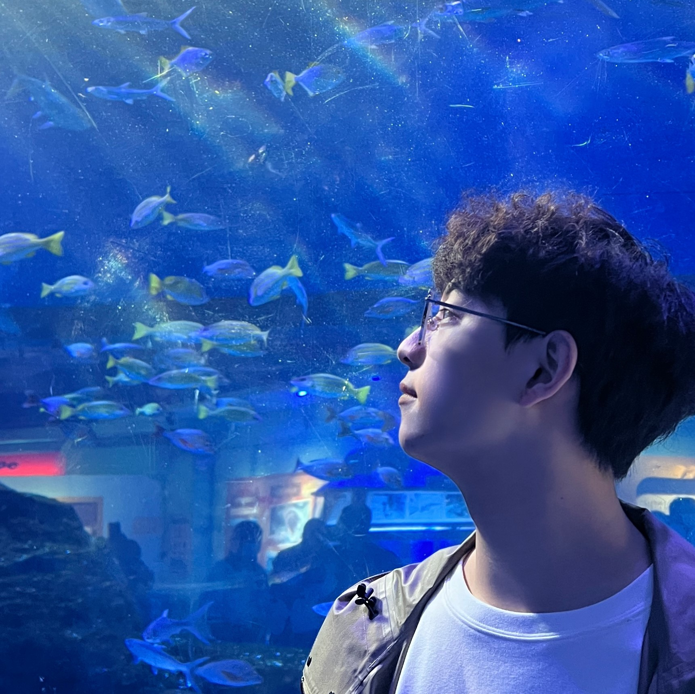

My name is Jiahao Zhou (周家豪), I’m currently an undergraduate student at the School of Remote Sensing and Information Engineering, Wuhan University (WHU).
My research interest lies in Geoinformatics and 3D Computer Vision. Supervised by Prof. Qingxiang Meng, I founded AntiE Team with Boheng Li, Sixing Lin, Tingyu Luo and Xinyue Zhang, which aims at developing emergency monitoring technologies derivation via remote sensing techniques.I have also been involved in several GIS projects, which enhance engineering abilities. I also enjoyed a great time conducting research on point cloud processing under the supervision of Prof. Zhen Dong, exploring multi-task learning in synthetic environments.
This is an example personal homepage built with bio-site. It features simplicity and integration with BibTeX.